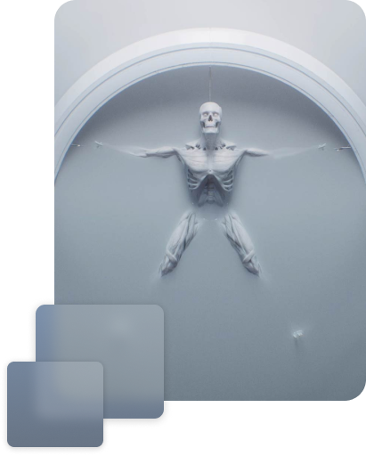
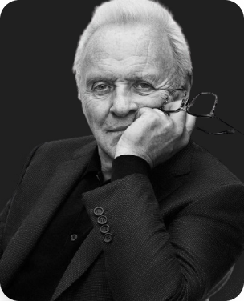
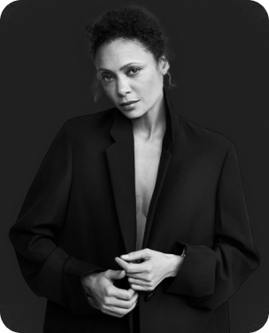
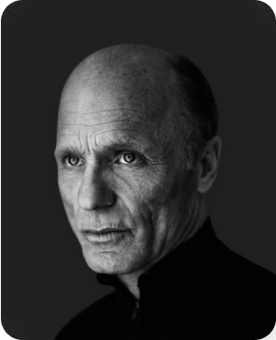
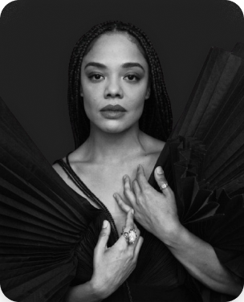
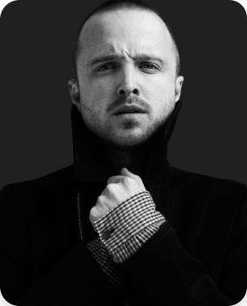
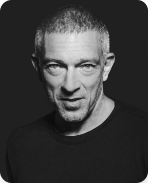

Westworld - Dove tutto è concesso
La trama si focalizza sull'evoluzione degli host, che gradualmente acquisiscono una coscienza di sé e si rivoltano contro i loro creatori e i visitatori del parco. Ricordano gli incontri con i visitatori, sviluppano emozioni complesse e aspirano a una propria autonomia. Questo processo di presa di coscienza li spinge a riflettere sulle proprie esistenze e sulle ingiustizie subite dai visitatori del parco. Successivamente, la ribellione degli host si trasforma in una vera e propria lotta per ottenere indipendenza e autodeterminazione.
Corri a scoprire meglio le trame intricanti di ciascuna stagione e immergiti nelle storie avvincenti dei principali protagonisti di Westworld.

Attrice americana versatile e talentuosa, nota per le sue performance intense e emotivamente cariche. Ha ricevuto elogi per ruoli complessi in film e serie TV, dimostrando una vasta gamma di abilità interpretative.
Acclamato attore americano noto per la sua versatilità e per le sue performance intense in film e serie TV. La sua presenza scenica e la sua capacità di incarnare una vasta gamma di personaggi gli hanno garantito un ruolo di primo piano nell'industria cinematografica.

Rinomato attore britannico, celebre per la sua straordinaria versatilità e la sua impressionante carriera cinematografica. Ha interpretato ruoli iconici in film come "Il Silenzio degli Innocenti" e "Hannibal", dimostrando un'eccezionale padronanza dell'arte dell'interpretazione.

Attrice britannica di grande talento, rinomata per le sue interpretazioni intense e convincenti in una varietà di film e serie TV. La sua presenza sullo schermo è notevole, con una capacità unica di trasformarsi nei personaggi che interpreta.

Attore americano di grande talento, noto per le sue interpretazioni memorabili in una vasta gamma di film e serie TV. Ha ricevuto numerosi premi e nomination, tra cui premi Oscar. La sua presenza sullo schermo è caratterizzata da una profonda gravità e autenticità, rendendolo uno degli attori più rispettati della sua generazione.

Attrice americana di grande talento, conosciuta per le sue interpretazioni vibranti e autentiche. Ha ottenuto riconoscimento per ruoli in film come "Creed" e "Thor: Ragnarok", dimostrando una notevole versatilità e carisma sullo schermo.

Attore statunitense noto soprattutto per il suo ruolo di Jesse Pinkman nella serie "Breaking Bad", per il quale ha ricevuto ampi elogi e numerosi premi. La sua capacità di portare alla vita personaggi complessi e sfaccettati gli ha garantito un posto di rilievo nell'industria cinematografica e televisiva.

Attore francese, celebre per la sua versatilità e la sua presenza magnetica sullo schermo. Ha interpretato ruoli memorabili in film come "La Haine" e "Black Swan", dimostrando una padronanza straordinaria dell'arte dell'interpretazione.
Percorri il labirinto e scoprirai tutte le
Westworld è il remake del film Il mondo dei robot del 1973.
In un certo senso, è il proseguimento della storia perché il sequel del film Futureworld offre un collegamento con la serie. Una scultura a forma di globo con la scritta "Delos", il nome della compagnia proprietaria del parco, è presente anche in Futureworld, suggerendo che il parco di Westworld sia stato costruito nell'area del vecchio parco ormai abbandonato.
L’incidente di Ben Barnes.
L’attore inglese si ruppe un piede durante il primo giorno di riprese. Per paura di perdere il lavoro, decise di non dire a nessuno dell’infortunio. Tuttavia, la frattura non gli permetteva di camminare normalmente, ed è così che ha deciso di aggiungere un’andatura zoppicante al suo personaggio, nel tentativo di dargli un’aura da cowboy. Una volta presa questa direzione, Barnes ha dovuto continuare a zoppicare per tutta la durata delle riprese, facendo passare il tutto per una deliberata scelta artistica.
Blade Runner e il mondo dei videogiochi sono le fonti d’ispirazione.
Il modo in cui gli ospiti vivono l'esperienza del parco richiama il mondo dei videogiochi, con la possibilità di scegliere personaggi, abiti e affrontare avventure di varia difficoltà. Costruito nei minimi dettagli, Westworld fornisce dunque un’esperienza che ricorda quella dei giochi di ruolo, nei quali non solo è possibile seguire numerose storyline secondarie ma anche ottenere un upgrade del proprio personaggio ed equipaggiamento.
A Westworld non si può morire.
Questa è una delle regole fondamentali sia per gli host che per i visitatori. Dopo ogni esperienza vissuta nel parco, gli androidi vengono riparati e la loro memoria cancellata, mentre gli ospiti non possono essere uccisi o feriti dagli host, in quanto ciò violerebbe il nucleo del loro codice. La regola è legata al nome Delos, la compagnia proprietaria del parco, che richiama l’omonima isola greca dove vigeva un antico decreto che proibiva di morire su terreno sacro alle divinità.